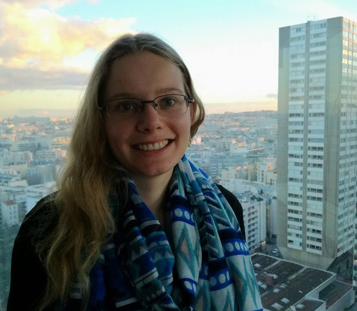

My name is Varje. Here I share my works and useful links I have discovered.
Currently I'm studying at Taru Vocational Education Center to become a junior software developer (web-specialist).
Also, I am working at STACC (Software Technology and Applications Competence Centre) as a UI developer.
In the past I have graduated biology from University of Tartu, but currently my days consist of programming, learning and dancing.
All my contacts are in the header. Feel free to contact me.
CV